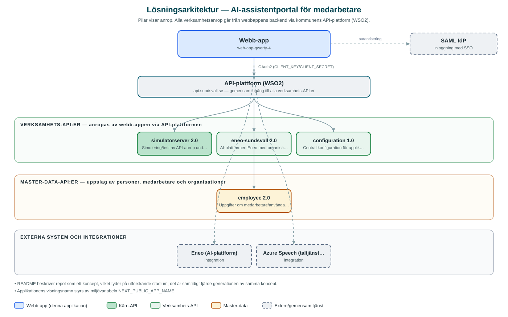

AI-assistentportal för medarbetare
Progressiv webbapp (PWA) som samlar organisationens AI-assistenter i Eneo och gör dem lättillgängliga för medarbetare på dator och mobil.
Om applikationen
Tjänsten är ett koncept för att nå ut med organisationens AI-assistenter i AI-plattformen Eneo till de anställda. Medarbetaren kan chatta med olika assistenter, delta i gruppchattar, arbeta i olika arbetsytor (spaces) och fästa sina mest använda assistenter för snabb åtkomst.
Appen är byggd som en progressiv webbapp som kan installeras på både dator och mobil, med stöd för filuppladdning i konversationer, notiser när svar blir klara i bakgrunden och uppläsning via Azures taltjänster.
Inloggning sker med kommunens centrala inloggning och assistentutbudet styrs av organisationens uppsättning i Eneo.
Det här stödjer applikationen
- Chatt med AI-assistenter – Samtala med organisationens assistenter i Eneo, med möjlighet att nämna assistenter i konversationer.
- Arbetsytor och gruppchatt – Organisera assistenter i arbetsytor och delta i gruppchattar.
- Fästa favoritassistenter – Fäst de assistenter som används mest för snabb åtkomst.
- Filuppladdning – Ladda upp filer som underlag i konversationer med assistenterna.
- PWA med notiser och tal – Installeras som app på dator och mobil, med bakgrundsnotiser om svar och uppläsning via talsyntes.
Teknisk dokumentation
Nedan beskrivs hur applikationen är uppbyggd, vilka API:er den använder och vad som krävs för att driftsätta den. Informationen är härledd ur källkoden och dess konfiguration på GitHub.
Arkitektur

Applikationen består av en webbaserad frontend (Next.js 15, React 19, sk-web-gui, PWA med webbmanifest) och en backend (Node.js med Express och routing-controllers (TypeScript, BFF)) som utvecklas i samma kodbas. Verksamhetsanrop går via kommunens gemensamma API-plattform (WSO2) – frontend pratar aldrig direkt med underliggande system. Inloggning: SAML (SSO). Övriga integrationer som förekommer i koden: Eneo (AI-plattform), Azure Speech (taltjänster), WSO2 API-gateway, SAML IdP.
Teknikstack
- Frontend: Next.js 15, React 19, sk-web-gui, PWA med webbmanifest
- Backend: Node.js med Express och routing-controllers (TypeScript, BFF)
- Test: Jest och Cypress med sammanslagen kodtäckning
API-beroenden
Applikationen konsumerar följande API:er via kommunens API-plattform. Versionerna är hämtade ur källkodens API-konfiguration.
| API | Version | Användning |
|---|---|---|
| simulatorserver | 2.0 | Simulering/test av API-anrop under utveckling. |
| eneo-sundsvall | 2.0 | AI-plattformen Eneo med organisationens assistenter, konversationer och arbetsytor. |
| configuration | 1.0 | Central konfiguration för applikationen. |
| employee | 2.0 | Uppgifter om medarbetare/användare. |
Konfiguration och driftsättning
- .env-filer för frontend och backend enligt exempel
- CLIENT_KEY och CLIENT_SECRET från WSO2-portalen
- ENEO_API_KEY och ENEO_TENANT_ID för AI-plattformen
- AZURE_REGION och AZURE_SUBSCRIPTION_KEY för taltjänster
- SAML-certifikat och nycklar
Noterbart ur källkoden
- README beskriver repot som ett koncept, vilket tyder på utforskande stadium; det är samtidigt fjärde generationen av samma koncept.
- Applikationens visningsnamn styrs av miljövariabeln NEXT_PUBLIC_APP_NAME.
Källkod
Källkoden är öppen och finns hos Sundsvalls kommun på GitHub. I källkodsförrådet finns även instruktioner för att klona, konfigurera och starta applikationen i egen miljö.